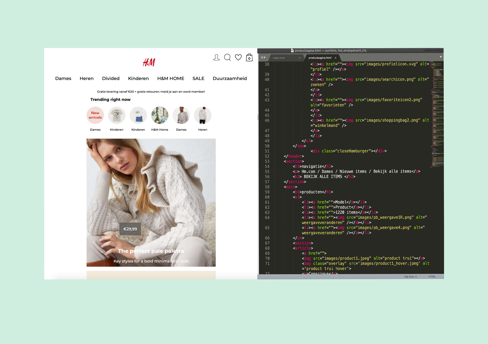

Frontend development
Bij het vak frontend development was het de bedoeling om een responsive website te bouwen in HTML/CSS en Javascript. Je moest een bestaande website namaken. Ik had gekozen voor de website van H&M.
Cijfer: 7/10
Behaalde leerdoelen
- Het maken van een responsive website
- Verzorgde en leesbare (toegankelijke) code schrijven
- Semantisch correcte code schrijven
- Het vormgeven van een website met CSS
- Een micro-interactie maken met Javasscript